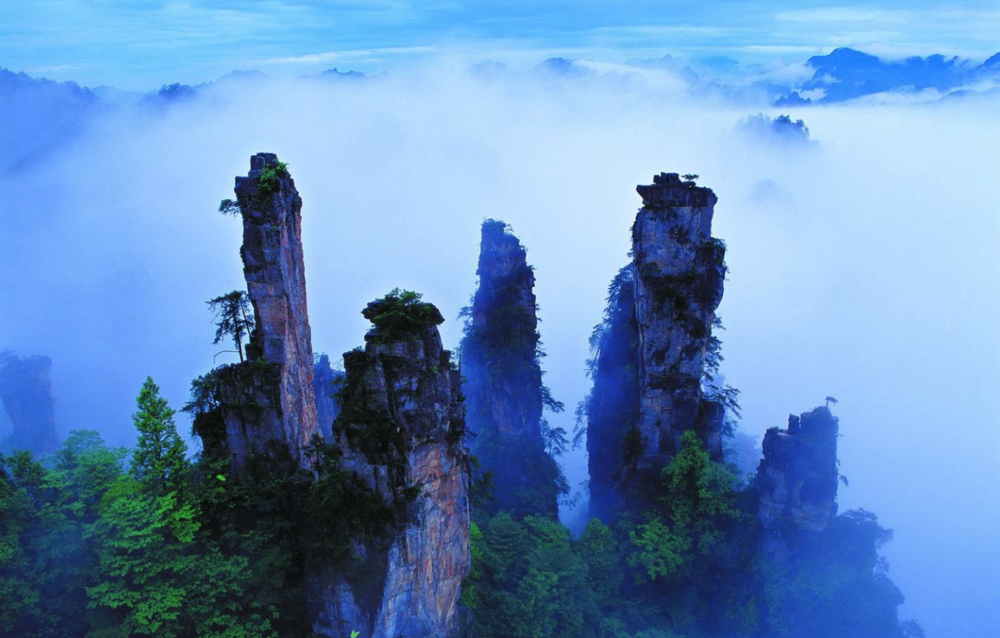
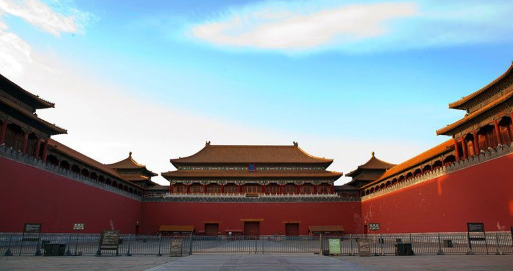

China is located in eastern Asia along the western shore of the Pacific Ocean. It spreads over a vastly diverse geographical area of 9.6 million square kilometers (about the size of the USA or Europe), and is home to approaching 1.4 billion people (more than N. America and Europe combined).
The highlands and hill regions account for 65 percent of the country's total landmass, and there are more than 2,000 lakes dotting the landscape. The highest mountain peak is Qomolangma (Mt. Everest) in Tibet, the highest in the world, 8,848 meters above sea level.
Among the 220,000 kilometers of rivers the Changjiang (Yangtze), Huanghe (Yellow River) and Zhujiang (Pearl River) are the most famous. The Yellow River Basin is the cradle of Chinese civilization, as the many cultural-historical sites along its banks can attest.
| Picture | Description |
|---|---|
| Guilin is one of China's most popular tourist destinations, and the epithet "By water, by mountains, most lovely, Guilin" is often associated with the city. The State Council of China has designated Guilin a National Famous Historical and Cultural City, doing so in the first edition of the list. |
|  | Zhangjiajie also known in Tujia language as Zhangx jif avlar is a prefecture-level city in the northwestern part of Hunan province, People's Republic of China. It comprises the district of Yongding, Wulingyuan and counties of Cili and Sangzhi. It contains the Zhangjiajie National Forest Park, part of the Wulingyuan Scenic Area which was as a UNESCO World Heritage Site in 1992 as well as an AAAAA scenic area by the China National Tourism Administration. |
| Huangshan is a mountain range insouthern Anhui province in eastern China. Vegetation on the range is thickest below 1,100 meters (3,600 ft), with trees growing up to the treeline at 1,800 meters (5,900 ft). |
| The Mausoleum of the First Qin Emperor (Qin Shi Huang) is located in Lintong District, Xi'an, Shaanxi province of China. This mausoleum was constructed over 38 years, from 246 to 208 BC, and is situated underneath a 76-meter-tall tomb mound shaped like a truncated pyramid.[1] The layout of the mausoleum is modeled on the Qin capital Xianyang, divided into inner and outer cities. The circumference of the inner city is 2.5 km (1.55 miles) and the outer is 6.3 km (3.9 miles). The tomb is located in the southwest of the inner city and faces east. The main tomb chamber housing the coffin and burial artifacts is the core of the architectural complex of the mausoleum. |
| Jiuzhaigou County is a county of Sichuan Province, China. It is under the administration of the Ngawa Tibetan and Qiang Autonomous Prefecture.[3] Formerly called Nanping County, it was renamed in 1998 to reflect the fact that the Jiuzhaigou Valley is located within its administration.[4] The county seat, Nanping Town, was created in 2013 by the merger of Yongle Town, Yongfeng Township, and Anle Township |
|  | The Forbidden City (Chinese: 故宫; pinyin: Gùgōng) is a palace complex in central Beijing, China. It houses the Palace Museum, and was the former Chinese imperial palace and state residence of the Emperor of China from the Ming dynasty (since the Yongle Emperor) to the end of the Qing dynasty, between 1420 and 1924. The Forbidden City served as the home of Chinese emperors and their households and was the ceremonial and political center of the Chinese government for almost 500 years. |
| The Potala Palace is a dzong fortress in the city of Lhasa, in Tibet. It was the winter palace of the Dalai Lamas from 1649 to 1959, has been a museum since then, and is a World Heritage Site since 1994. The palace is named after Mount Potalaka, the mythical abode of the bodhisattva Avalokiteśvara. The 5th Dalai Lama started its construction in 1645 after one of his spiritual advisers, Konchog Chophel (died 1646), pointed out that the site was ideal as a seat of government, situated as it is between Drepung and Sera monasteries and the old city of Lhasa. It may overlay the remains of an earlier fortress called the White or Red Palace on the site, built by Songtsen Gampo in 637. |
| The Great Wall of China is the collective name of a series of fortification systems generally built across the historical northern borders of China to protect and consolidate territories of Chinese states and empires against various nomadic groups of the steppe and their polities. Several walls were being built from as early as the 7th century BC by ancient Chinese states;[2] selective stretches were later joined together by Qin Shi Huang (220–206 BC), the first emperor of China. Little of the Qin wall remains.[3] Later on, many successive dynasties have built and maintained multiple stretches of border walls. The most well-known sections of the wall were built by the Ming dynasty (1368–1644). |
Need a tour guide? Contact Jian Qiu!
Phone: 999-999-9999
Email: jian@email.com